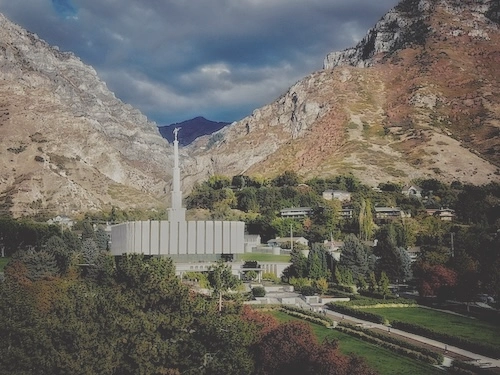

Haden Leavitt
Where I'm from:
How I got here:
I'm a junior per BYU, but this is my first semester taking any TES core classes. I began my academic journey after my mission in Fall 2021. But after my first semester I learned that school isn't my strong suit. I worked in the BYU live audio team throughout this time at BYU and during my third semester I got a job offer as an audio engineer and I took it. I left BYU and worked in Salt Lake for a few years. I gained a lot of experience and found some success in my career and in real estate. I decided to take the lead I gained and go back to school. I chose TES as it is the program that will help me develop many applicable skills while completing this bachelor's degree.
Where I'm going:
After completing the TES program, I plan to go back to work as an audio engineer, but this time I hope to work for an institution, hopefully BYU. This would allow me to have a more stable work life and I'll be able to give more to my family. I plan to continue my inveestment work in real estate and hopefully give more and more time to my wife and my kids.
Playlist for my life:
- Wild Heart -Daughtry
- Drops in the Ocean -Hawk Nelson
- In Case You Don't Live Forever -Ben Platt
- Whatever It Takes -Stephen Stanley
- This is Our God -Phil Wickham
- He Lives in You -Peter Hollens
- I'll Make a Man Out of You -Dan Vasc